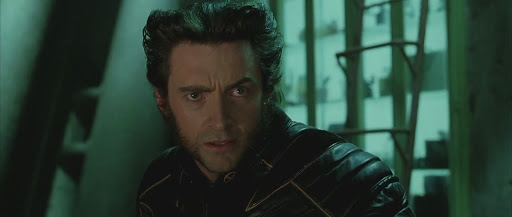

Free Download X-Men 2 United (2003) Hindi Dubbed Full Movie Dual Audio (Hindi-English). This is a dual audio movie and available in 480p & 720p quality. TThis movie is based on Action & Sci-Fi Genre. It features Hugh Jackman, Will Yun Lee, Tao Okamoto as the main star cast of the movie. This movie is now dubbed in Hindi in 720p & 480p & 1080p MKV. This Print comes with very Good Audio and BluRay.
iWatchEverything.unaux.com is the best Website to To Download Hollywood Movies, Web Series, Tv Series, Hindi Dubbed And Multi Audio Movies. We Are Providing You Direct Secure Google Drive Link For Fast Downloading. Just Click On Download Button To Download All Movies In Few Clicks And Seconds. Also You Can Watch Movies Online.
X-Men 2 United (2003)
126 min|Action, Sci-Fi|26 Jul 2003
Rating: 6.7 / 10 from 432,902 users
Nightcrawler, a mutant, tries to murder the president of the United States. Meanwhile, when William Stryker attacks Professor X's school, his mutant students team up to thwart his evil plans.
Director: Bryan Singer
Creator: Zak Penn (story), David Hayter (story)
Actors: Patrick Stewart, Hugh Jackman, Halle Berry
Download X-Men 2 United (2003) (Hindi Dubbed) 480p – 720p – 1080p ~ iWatchEverything.unaux.com
Movie Info:
Full Name: X-Men 2 United
Release Year: 2003
Country: Pakistan
Subtitles: English
Runtime: 2h 6m
Language: Dual Audio [English+Hindi]
Quality: 480p & 720p & 1080p
Size: 450mb & 950mb & 2.8gb
Plot/Storyline:
At the White House, brainwashed teleporting mutant Nightcrawler attacks the President of the United States. He is shot and retreats. Meanwhile, Logan explores an abandoned military installation at Alkali Lake in Alberta for clues to his past, but finds nothing. Jean Grey has been having premonitions and struggles to concentrate as her powers become increasingly difficult to control. Later, Logan returns to Professor Xavier’s school for mutants, and Xavier tracks Nightcrawler using Cerebro. Xavier and Cyclops go to question the imprisoned Magneto about the attack, while X-Men Storm and Jean Grey retrieve Nightcrawler. Military scientist Colonel William Stryker approaches the president and receives approval to investigate Xavier’s mansion for their ties to mutants in the wake of the recent attack. Stryker’s forces invade the school and abduct some of the students. Colossus leads the remaining students to safety while Logan, Rogue, Iceman, and Pyro escape, and Stryker’s assistant Yuriko Oyama captures Cyclops and Xavier. During the attack, Logan confronts Stryker, who addresses him as Wolverine and seems to know about his past.
Several months have passed since the X-Men defeated Magneto and imprisoned him in a seemingly impregnable plastic chamber. One day, a mutant by the name of Nightcrawler infiltrates the White House and attempts to assassinate the President, setting off a chain reaction of anti-mutant measures by the government. Meanwhile, Logan is trying to discover his past. As scientist named William Stryker discovers Professor X's secret school and Cerebro, Magneto's partner, Mystique, is planning to break her leader out of prison. But when Professor X's school is attacked by Stryker's forces, Logan, Rogue, Iceman, and a few are lucky to escape. Those who remain meet in Boston, where they form an uneasy alliance with Magneto to stop Stryker and rescue Professor X. Written by John Wiggins
ScreenShots:

Helpful Right? If you are looking for X-Men 2 United (2003) Movie Download in Hindi Dubbed then don’t worry. Below you can easily find the download link. Enjoy Our Service!!
Download X-Men 2 United (2003) Dual Audio (Hindi-English).
Thanks for visiting iWatchEverything Website he hub for Hollywood Movies & TV Series for downloading X-Men 2 United (2003) dual audio.